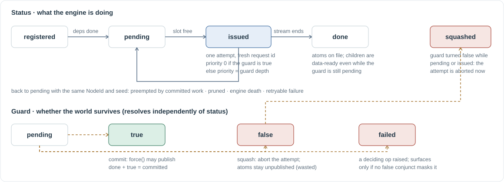

The scheduler¶
The scheduler turns the guarded graph into engine requests. Its job is stated in one line in the source: legality in, cost out. Whether a node may run is decided by data readiness and guard state; when and in what order is a cost policy. This page follows a record through its life, then explains the funding order, cancellation, retries, and engine recovery.

{kind=link}
One thread, two indexes¶
The scheduler runs entirely on the runtime's asyncio thread. The tracer posts registrations, demands, and decision callbacks to it with call_soon_threadsafe; engine streams are asyncio tasks on the same loop. There are no locks in the scheduler because there is no concurrency inside it.
It keeps every record ever registered in records (needed for dependency wiring, results, and diagnostics) and a separate _pending index of records that can still issue. An issue pass scans only the pending index, so a long-running benchmark with tens of thousands of finished nodes does not pay for them on every wake-up.
Admission¶
An issue pass runs after every event: a registration, a demand, a decision resolving, an attempt ending. For each pending, data-ready record:
| Guard | Condition | Issue as |
|---|---|---|
| true | slot free on its engine, or a speculative victim can be preempted | committed, priority 0 |
| pending | depth ≤ W, spec_inflight < β, fewer than 5 failed speculative attempts, no observation barrier |
speculative, priority = depth |
| false / failed | never; the guard callback squashes it |
Committed records are sorted by data-ready time, then registration time. Speculative records are sorted by the funding order of the design:
demanded first → shallower guard depth → lower rank sum → higher effective hint → older registration
Demanded means a tracer thread is waiting on this record through an exit; refusing it could deadlock the decision the scheduler itself is waiting for. The effective hint is the record's own static hint plus every resolved member hint on the decisions its guard names, read at dispatch time. Hints come from choose(hint=...) and may resolve long after a record registered; because a descendant's guard carries its ancestor's At literal, fresh evidence about a candidate re-prioritizes that candidate's whole speculative subtree without re-registration. Hints are advisory: never validated, never part of identity, never able to change a byte.
SpecConfig.depth1_unmetered=True lets depth-1 continuations bypass β. Their population is already bounded by the decision's pool, so metering them only starves a late-finishing candidate's children behind deeper speculation.
Committed work preempts speculation¶
If a committed record finds its engine full, _preempt_for cancels the worst in-flight speculative attempt on that engine: deepest guard, lowest hint, newest issue. The victim returns to pending with its NodeId and seed intact and reissues when a slot frees. Speculation never preempts committed work. With the flags off, speculation cancels nothing except a predicted loser (see optimizations).
Attempts¶
_issue creates an Attempt with a fresh request id and a task running Runtime.execute_node, which streams from the engine adapter and aggregates deltas into result_atoms, exact result_text, logprobs, and token counts. The record's live partial stream is aliased for two advisory readers (prefix prefetch and bound-commit truncation) but is never a result.
How an attempt ends decides what happens to the record:
| Outcome | Record |
|---|---|
| stream finished | done; children lose this dependency and may become data-ready; committed if the guard is already true, else waits |
cancelled with cause preempt, spec-preempt, prune, engine-dead |
back to pending, reissue later |
cancelled with cause squash |
stays squashed |
cancelled with cause bound |
terminal done with tokens-so-far, finish_reason="bound" (committed algorithmic truncation) |
| engine error, speculative | spec_failures += 1, back to pending; a node that merely tried early is never poisoned |
| engine error, committed | retry up to 3 times, then failed with source semantics |
| deterministic projection error, speculative | deferred; surfaces only if the world commits |
EngineDeadError |
begin engine recovery |
Failure cascades along data edges: a child whose producer can never materialize fails immediately with the producer's cause, exactly where the serial program would have raised, instead of waiting forever.
Guard callbacks¶
When a record registers, the scheduler subscribes to the unresolved frontier of its guard: every decision whose resolution could change the guard's value now. Because a resolution can expose deeper frontier decisions (a literal whose entry guard just turned true), _reevaluate re-subscribes and re-reads until nothing new appears; only then is waiting safe. Re-evaluation does one of three things:
- guard true: mark committed, resolve
commit_fut, write a ledger row if already done; - guard false: squash, cancelling any running attempt, keeping any atoms on file unpublished;
- guard failed: squash with the deciding computation's cause, so consumers re-raise it.
Consumers hold two futures per record, stable across attempts: done_fut (data exists) and commit_fut (data may be published). Pure ops and speculative descendants wait on the first; force and unknown-effect bodies wait on the second.
Engine death¶
A vLLM EngineDeadError is process-global. The scheduler trips one fuse per engine key: it advances the engine epoch, cancels every in-flight attempt of that engine with cause engine-dead, clears any partial results they produced, drains them, and calls the adapter's restart at most engine_restart_limit times (default 1). An attempt that finishes while its epoch is stale is fenced before it can publish. If the rebuild fails or the limit is exhausted, every pending record on that engine is poisoned with the cause, which then surfaces only in worlds that commit.
The tool scheduler¶
Tool bodies do not share the op executor. ToolScheduler keeps two admission queues in front of its own thread pool: committed work always drains first; speculable bodies under a pending guard are admitted only when speculation is enabled, the guard depth is within W, and a separate tool budget (β, capped by worker count) has room. A queued speculative body is promoted when its guard commits and discarded when it squashes; a body that already started cannot be stopped, which is exactly what the speculable declaration licenses. Unknown-effect bodies are never retried. Tools and the tool loop covers the contracts.
Bookkeeping you can read¶
Every record writes one ledger row when its disposition is known: committed, wasted (finished or aborted in a false world), or failed. Rows carry the six timestamps, token counts, the engine-reported cached-token count, speculative, depth_at_issue, and finish_reason. Control-plane ops, decisions, tool bodies, and tool-loop templates append to a separate event list. Timelines and diagnostics shows how to read them.
In the code¶
execution/scheduler.py:Record,Attempt,register,_issue_pass,_effective_hint,_preempt_for,_run,_reevaluate,_squash,_fail,_finish,_begin_engine_recovery.execution/runtime.py:execute_node,ledger_row,SpecConfig.execution/tool_scheduler.py.- Tests:
test_scheduler_admission.py,test_attempts.py,test_engine_recovery.py,test_spec_hint_priority.py,test_tool_scheduler.py.
Next: Engine adapters, the physical side of an attempt.